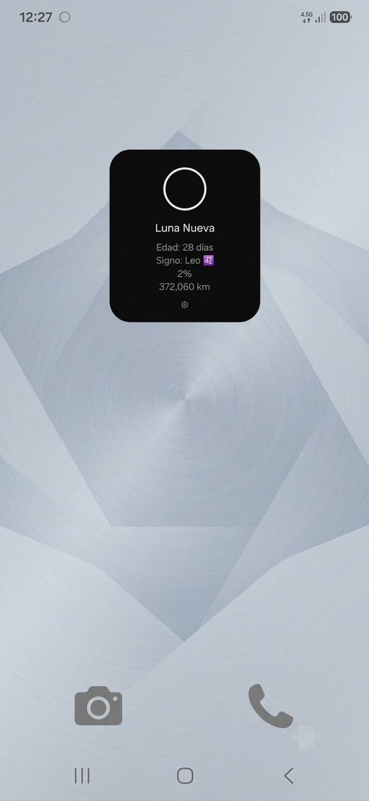
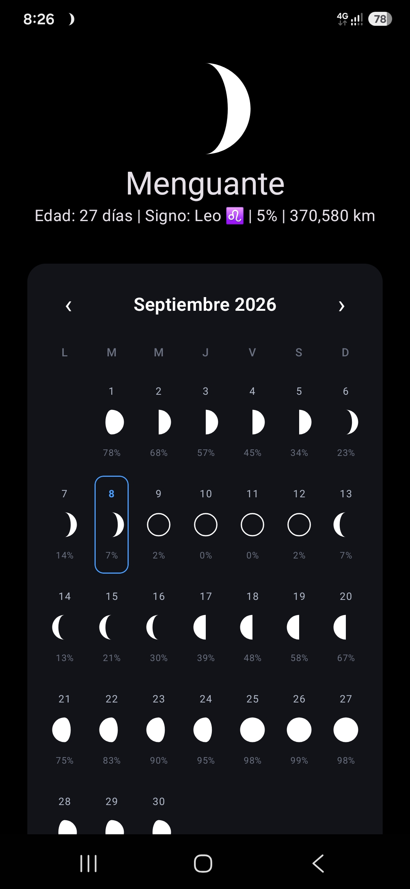

El pulso del cosmos en tu pantalla de inicio
Lunar Pin sincroniza tu ritmo diario con el ciclo lunar. Descubre la iluminación exacta, edad y signo zodiacal de la Luna con diseño OLED oscuro, widgets en tiempo real y privacidad absoluta.
Creada para pantallas AMOLED
Una interfaz oscura profunda con negros puros que protege tu visión nocturna y maximiza la duración de batería de tu smartphone.

Widgets Jetpack Glance
Visualiza el estado lunar sin necesidad de desbloquear o navegar. Actualización automática eficiente en segundo plano.

Calendario & Signos Celestes
Proyecta lunas llenas, lunas nuevas y el tránsito de constelaciones con nuestro motor astronómico de alta precisión.
Tres pilares inquebrantables
Cálculo Matemático Local
Algoritmo sinódico autónomo de 29.53 días. No depende de servidores caídos ni APIs meteorológicas lentas: funciona siempre, incluso en medio del océano o en la montaña.
100% Privada y Offline
Cero recolección de datos personales, cero identificadores de publicidad, cero analíticas de terceros. Toda tu información reside exclusivamente en tu dispositivo.
Rendimiento y Batería
Construida en Kotlin nativo para Android y código web vanilla ultra ligero. Sin consumo vampiro de memoria ni servicios innecesarios en segundo plano.